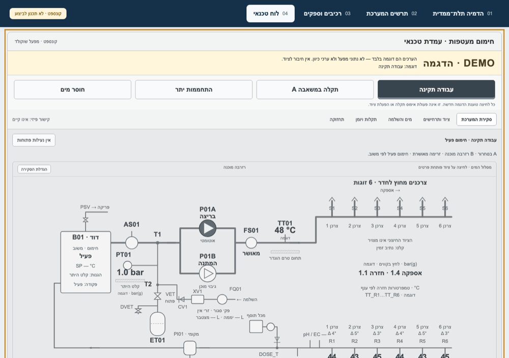
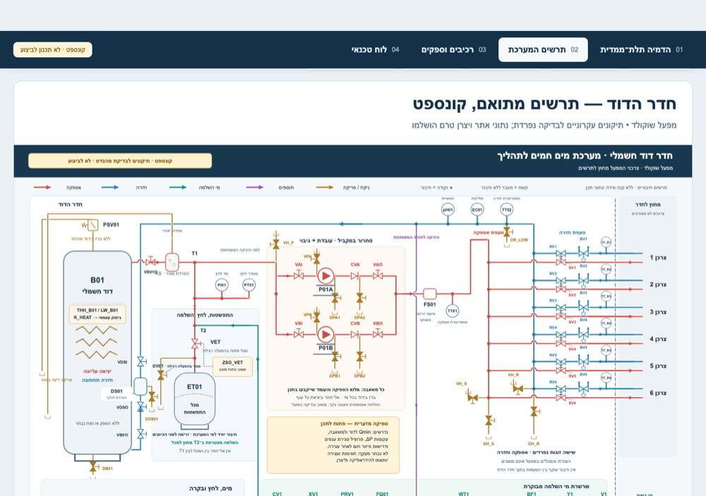

פרויקט מרכזי · קונספט הנדסי
מערכת דוד עם מעטפת מים (45°C, שישה צרכנים)
קונספט לחדר דוד שמחזיק מכלי עבודה בטמפרטורה קבועה של 45°C דרך מעטפת מים עבור שישה צרכנים במקביל — בעדינות, בלי נקודות חמות.


מה יש כאן
הבדיקה ההנדסית ומרכיבי הקונספט
- בדיקת סכמה רכיב אחר רכיבכל משאבה, שסתום וחיישן נבדקו מול התפקיד שלהם במערכת.
- הגנות לפני הכולרשימת הגנות: הגנה מפני לחץ יתר, הגנה מפני חימום יבש, וניתוק גופי החימום כשמשהו לא תקין.
- זרימה מינימליתבדיקה שתמיד יש זרימה דרך הדוד, גם כשכל הצרכנים סגורים.
- לוח טכנאי (מצב DEMO)מסך תפעול שמדגים מצב עבודה תקין ותרחישי תקלה (משאבה, התחממות יתר, חוסר מים).
- שני סבבי ביקורת עצמאיתהשוואה בין התרשים לאיור ובין הגרסאות — כל אי־התאמה נבדקה ותועדה.
- תיק למהנדסמסמך המלצות מסודר למהנדס שיתכנן את המערכת לביצוע.
החלק שלי, התוצאה והמגבלות
- המשימהתכנון קונספט לחדר דוד עם מעטפת מים בטמפרטורת אספקה של 45°C עבור שישה צרכנים.
- החלק שליהגדרתי את המשימה, ערכתי בדיקה הנדסית של המערכת, העברתי אותה שני סבבים של ביקורת עצמאית עם הסוכנים שלי, ואיפיינתי את לוח הטכנאי.
- התוצאהעמוד קונספט פומבי מלא: פתיחת עמוד הקונספט בחלון חדש ↗
- מגבלותזהו קונספט הנדסי, לא תכנון לביצוע. ערכי הכיול של ההגנות והנתון "עד 2 בר" (2 bar) דורשים חישוב הנדסי מלא ונתוני שטח אמיתיים.